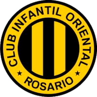
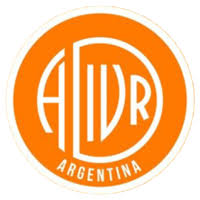
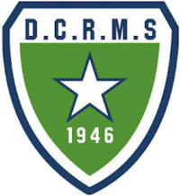
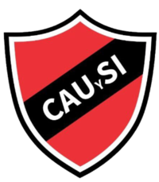
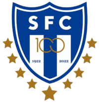
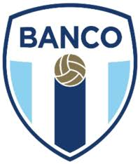
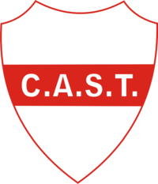
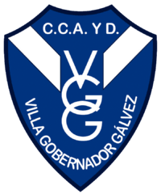

La Selección Femenina de futsal ya tiene cuerpo técnico
Leandro Maurino, entrenador del club Horizonte, estará al frente del grupo de trabajo que comandará al elenco de la Asociación Rosarina.
Leer más...Leandro Maurino, entrenador del club Horizonte, estará al frente del grupo de trabajo que comandará al elenco de la Asociación Rosarina.
Leer más...3 - 1
2 - 2
 C. Cordoba
C. Cordoba
| # | Club | Pts | PJ |
|---|---|---|---|
| 1 |
Rosario Central
|
32 | 15 |
| 2 |
Newell's Old Boys
|
30 | 15 |
| 3 |
Coronel Aguirre
|
28 | 15 |
| 4 |
Central Córdoba
|
27 | 15 |
| 5 |
Provincial
|
25 | 15 |
| 6 |
ADIUR
|
24 | 15 |
| 7 |
Alianza Sport
|
22 | 15 |
| 8 |
Tiro Federal
|
21 | 15 |
| 9 |
Morning Star
|
20 | 15 |
| 10 |
Unión y Soc. Italiana
|
19 | 15 |
| 11 |
Tiro Suizo
|
17 | 15 |
| 12 |
Pablo VI
|
16 | 15 |
| 13 |
Oriental
|
14 | 15 |
| 14 |
Club Banco Nación
|
12 | 15 |
| 15 |
San Telmo Funes
|
10 | 15 |
| 16 |
Club Gálvez
|
8 | 15 |